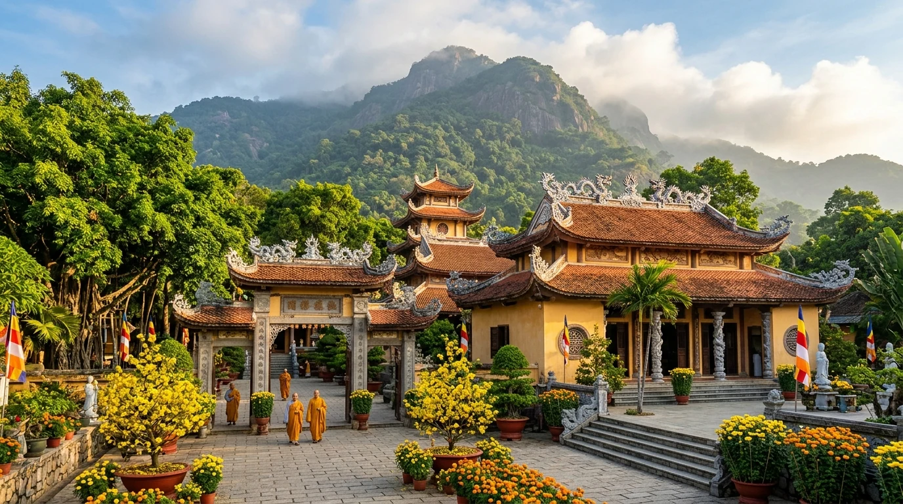

🧭 1. Tổng Quan Hệ Thống Chùa Núi Bà Đen
Mạch nguồn Phật pháp trên non thiêng khởi phát từ giữa thế kỷ XVIII khi Thiền sư Đạo Trung — Thiện Hiếu (tục gọi Tổ Đỉa) thuộc dòng thiền Lâm Tế đời thứ 38 cùng đệ tử là Thiền sư Tánh Thiên đặt chân lên lưng chừng núi ở độ cao 350m khai sơn Linh Sơn Tiên Thạch Tự (Chùa Bà). Trải qua ba thế kỷ nắng mưa biên viễn, quần thể đã mở rộng thành dải già lam liên hoàn từ chân núi lên sườn đá: Chùa Trung (Linh Sơn Phước Trung), Chùa Bà, Điện Bà hang đá và Chùa Hang (Linh Sơn Long Châu Tự). Năm 1989, Núi Bà Đen được xếp hạng Di tích lịch sử - văn hóa và danh thắng cấp Quốc gia; đến năm 2018 (QĐ 3325/QĐ-BVHTTDL), Lễ hội Vía Bà Linh Sơn Thánh Mẫu (mùng 4–6 tháng 5 âm lịch) được ghi danh là Di sản Văn hóa Phi vật thể Quốc gia.
Trên đỉnh cao 986m quanh năm mây phủ, không gian tâm linh đương đại tiếp nối trầm tích xưa với Tượng Phật Bà Tây Bổ Đà Sơn cao 72m đúc từ hơn 170 tấn đồng đỏ (xác lập kỷ lục châu Á về tượng Phật Bà bằng đồng cao nhất tọa lạc trên đỉnh núi) và Đại tượng Bồ Tát Di Lặc cao 36m ghép từ 6.688 viên đá sa thạch tự nhiên nhìn về mặt nước hồ Dầu Tiếng mênh mông.
📜 2. Nghi Thức Hành Lễ & Văn Khấn Núi Bà
Hành hương Núi Bà Đen đi theo nguyên tắc tuần tự từ thấp lên cao — từ chân núi tĩnh tâm qua cụm cổ tự 300 năm lưng chừng sườn đá rồi mới lên đỉnh mây chiêm bái chư Phật, giữ trọn nét văn minh và chánh niệm:
🏮 3 Quy Chuẩn Cốt Lõi Khi Hành Lễ Tại Núi Bà Đen
🕯️ Một Nén Tâm Hương Ngoài Sân Điện
Chỉ dâng 1 nén tâm hương tại lư đồng lớn ngoài sân thoáng đãng. Tuyệt đối không đốt hương nến dày đặc hay hóa vàng mã bên trong Điện Bà hang đá và các ngôi bảo điện gỗ để phòng cháy rừng và giữ bầu không khí trong lành.
🗣️ Khấn Nguyện Chánh Niệm — Không Mê Tín
Thành tâm cầu nguyện quốc thái dân an, gia đạo hiếu thuận, trí tuệ sáng suốt. Không vay mượn lộc âm, không nhét tiền lẻ vào kẽ đá hang động, khe tượng Phật hay thả tiền xuống suối nước quanh chùa.
🪷 Lễ Phẩm Thuần Chay & Trang Phục Kín Đáo
Sắm lễ thanh khiết gồm hoa sen, hoa cúc, mâm ngũ quả tươi, bánh ít chay, trà nước tinh khiết; không dâng lễ mặn tại toàn bộ khu vực chùa Phật và Điện Bà. Mang giày bệt êm chân để đi bậc đá an toàn.
⛩️ 3. Lộ Trình 6 Trạm Hành Lễ & Chánh Niệm
Lộ trình chuẩn phong tục đi tuần tự 6 trạm từ chân núi (Chùa Trung) lên lưng chừng sườn đá 350m (Chùa Bà, Điện Bà, Chùa Hang) và viên mãn trên đỉnh mây 986m (Tượng Phật Bà Tây Bổ Đà Sơn & Đại tượng Bồ Tát Di Lặc):
Hành Trình Thiền Hành Đệ Nhất Thiên Sơn Tây Ninh
Đồng hành cùng hành giả áo lam bước qua 6 thánh tích thiêng liêng từ chân núi lên đỉnh mây 986m. Tại mỗi trạm, bạn có thể dâng hương chánh niệm, thỉnh chuông ngân vang, chiêm nghiệm sử liệu xác thực và đọc bài văn khấn cổ truyền chuẩn mực.

Tọa lạc nơi chân núi Bà Đen rợp bóng cổ thụ xanh mát, Chùa Trung (tên chữ Linh Sơn Phước Trung) là điểm dừng chân mở đầu theo lệ cổ của khách thập phương trước khi vượt dốc lên Điện Bà. Ngôi chùa mang nét kiến trúc Phật giáo Bắc tông Nam Bộ giản dị, thanh bình, gắn liền với công đức khai hoang tu tập của chư vị Tổ sư và tưởng niệm nghĩa sĩ yêu nước vùng đất Tây Ninh.
🚪 Nghi Thức Hành Lễ & Lối Đi
- Dừng chân chỉnh trang y phục kín đáo, rũ bỏ ưu phiền phố thị trước khi bước qua cổng Linh Sơn Phước Trung.
- Đi nhẹ theo lối bên phải vào bái Phật tại chánh điện, giữ giọng nói trầm khẽ nơi cửa thiền.
- Chỉ thắp 1 nén hương tại lư đồng ngoài sân, không mang nhang đang cháy vào gian thờ nội tự.
🙏 Giá Trị Lịch Sử & Tâm Linh
- Theo phong tục hành hương Nam Bộ xưa, khách thập phương luôn ghé lễ Phật tại Chùa Trung trước khi leo núi lễ Bà.
- Khuôn viên chùa thanh vắng dưới tán cây sao, cây dầu cổ thụ giúp điều hòa hơi thở và định tĩnh tâm ý.
- Tên hiệu 'Linh Sơn Phước Trung' gửi gắm ước vọng muôn dân hòa thuận, đồng tâm hướng thiện dưới bóng non linh.
CHỨNG NHẬN CHIÊM BÁI CHÙA BÀ ĐEN TRỌN VẸN
Chúc mừng bạn đã hoàn thành trọn vẹn lộ trình thiền hành 6 trạm tại Hệ thống Chùa Núi Bà Đen từ Chùa Trung chân núi qua cổ tự Linh Sơn Tiên Thạch lên đỉnh mây 986m. Nguyện cầu Tam Bảo và Linh Sơn Thánh Mẫu gia hộ thân tâm thường an lạc, vạn sự cát tường.
🧭 4. Lịch Trình Chiêm Bái 1 Ngày Tối Ưu
Gợi ý lịch trình phân bổ sức lực hợp lý giúp chiêm bái trọn vẹn cụm cổ tự lưng chừng núi và không gian Phật pháp trên đỉnh mây 986m trong ngày:
Buổi Sáng (06h30 - 11h30): Lễ Chùa Trung & Cụm Cổ Tự Lưng Chừng Núi 350m
- 06h30: Xuất phát đến Khu di tích Núi Bà Đen trong tiết trời mai thanh mát, ghé Trạm 1 Chùa Trung (Linh Sơn Phước Trung) dưới chân núi đảnh lễ Tam Bảo khai mở hành trình.
- 07h45: Đi tuyến cáp treo Chùa Hang (hoặc men đường bậc đá cổ truyền dưới tán rừng) lên độ cao 350m chiêm bái Trạm 2 Linh Sơn Tiên Thạch Tự 300 năm tuổi.
- 09h00: Thành tâm hành lễ tại Trạm 3 Điện Bà trong hang đá tự nhiên thờ Linh Sơn Thánh Mẫu.
- 10h15: Dạo bước qua lối đá rợp bóng cây sang Trạm 4 Chùa Hang (Linh Sơn Long Châu Tự) dâng hương tri ân anh linh các anh hùng liệt sĩ.
Buổi Trưa (11h30 - 13h15): Thưởng Thức Ẩm Thực Chay Đặc Sản Tây Ninh
Nghỉ chân dùng bữa trưa chay thanh tịnh tại khu vực nhà ga hoặc các quán chay truyền thống Tây Ninh dưới chân núi với những món trứ danh: bánh tráng phơi sương cuốn rau rừng chay, bún bì chay, canh nấm mối nấu bầu và muối ớt chay rang tay thơm dịu.
Buổi Chiều (13h30 - 17h00): Lên Đỉnh 986m Chiêm Bái Phật Bà & Đại Tượng Di Lặc
- 13h30: Đi cáp treo thẳng lên đỉnh núi Bà Đen cao 986m giữa làn mây trắng bồng bềnh, tham quan không gian trưng bày nghệ thuật Phật giáo dưới chân đài sen.
- 14h30: Hành lễ tại Trạm 5 Tượng Phật Bà Tây Bổ Đà Sơn cao 72m bằng đồng đỏ uy nghiêm rưới nước cam lộ lành.
- 15h45: Bước xuống các bậc thang uốn lượn đến Trạm 6 Đại tượng Bồ Tát Di Lặc đá sa thạch (6.688 viên đá), tĩnh tọa ngắm toàn cảnh hồ Dầu Tiếng lúc chiều tà trước khi xuống núi lúc 17h00.